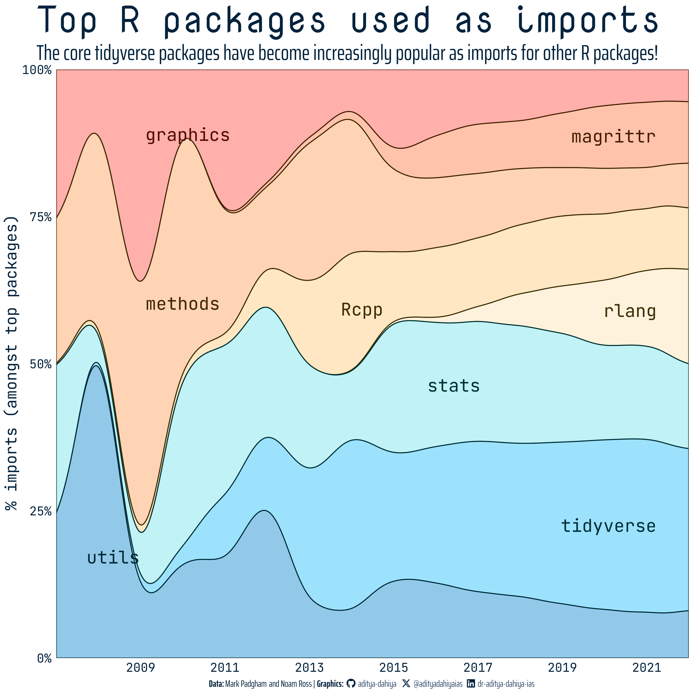

Data Visualization Projects
Examples of Visualizations Created for #TidyTuesday
Hey there, data enthusiasts! Feast your eyes on the visualizations meticulously crafted by yours truly. This spectacle unfolds every week as part of the #TidyTuesday Movement, a data-driven extravaganza ignited by the blazing passion of the R4DS Online Learning Community. We’re not just talking about any data; we’re talking about real-world datasets that pack a punch and make learning to dance with data a riveting experience.
But wait, there’s more! Before you dive headfirst into this visual feast, I’ve laid out the secrets behind the magic – the code, the portal to the dataset, and a description.
Welcome to the future of visual storytelling – where data meets design in a symphony of awe-inspiring graphics. Let the adventure begin! 🚀📊✨
2023
Week 46: Diwali Sales
Diwali Sales at #TidyTuesday | Code | Data

Week 47: R-Ladies Chapter Events
R-Ladies Chapter Events at #TidyTuesday | Code | Data

Week 48: Doctor Who Episodes
Doctor Who Episodes at #TidyTuesday | Code | Data

Week 49: Life Expectancy
Life Expectancy (Our World in Data) at #TidyTuesday | Code | Data

Week 50: Holiday Movies
Holiday Movies by IMDb non-commercial datasets at #TidyTuesday | Code | Data

Week 51: Holiday Episodes
Holiday Episodes by IMDb non-commercial datasets at #TidyTuesday | Code | Data

Week 52: R Packages Structure
Historical Trends in R Package Structure and Inter-dependency on CRAN by Mark Padgham and Noam Ross at #TidyTuesday



2024
Week 1: Movie Theaters in Delhi (India)
Movie Theatre Data for 8 Indian Cities by Harsha Devulapalli at #TidyTuesday | Code | Data

Week 2: Canadian Hockey Player Birth Months
Inspired by Are Birth Dates Still Destiny for Canadian NHL Players? by JLaw at #TidyTuesday | Code | Data

Code for another graph with the same data.

Week 3: US Polling Places 2012-2020
US Polling Places 2012-2020 by Center for Public Integrity at #TidyTuesday | Code | Data

Week 4: Educational attainment of young people in English towns
Why do children and young people in smaller towns do better academically than those in larger towns? by The UK Office for National Statistics at #TidyTuesday | Code | Data

Week 5: Groundhog Day predictions
Groundhog predictions by groundhog-day.com at #TidyTuesday | Code | Data

Week 6: World heritage sites
World heritage sites by UNESCO World Heritage Sites at #TidyTuesday | Code | Data

Week 7: Valentine’s Day Consumer Data
Valentine’s Day survey data by National Retail Federation’s Valentine’s Day Data Center at #TidyTuesday | Code | Data

Week 8: R Consortium ISC Grants
R Consortium ISC Funded Projects’ data by R Consortium at the Linux Foundation Projects at #TidyTuesday | Code | Data

Week 9: Leap Day
Data from the February 29 article on Wikipedia at #TidyTuesday | Code | Data

Week 10: Trash Wheel Collection Data
This week’s Trash Wheel Collection Data comes from the Mr. Trash Wheel at the Baltimore Healthy Harbor initiative at #TidyTuesday | Code | Data

Week 11: Fiscal Sponsors
The dataset comes from the Fiscal Sponsor Directory, which analyzed their directory in March 2023. | #TidyTuesday | Code | Data

Week 12: X-Men Mutant Money-Ball
This week’s data is X-Men Mutant Moneyball from Rally’s Mutant moneyball: a data driven ultimate X-men by Anderson Evans | #TidyTuesday | Code | Data

Week 13: NCAA Men’s March Madness
This week’s data is NCAA Men’s March Madness data from Nishaan Amin’s Kaggle dataset and analysis Bracketology: predicting March Madness | #TidyTuesday | Code | Data

Week 14: Du Bois Visualization Challenge 2024
This week is organized around the colors of the Pan African Flag. We reproduce plate 37, “A Series Of Statistical Charts Illustrating The Conditions Of Descendants Of Formal African Slaves Now Resident In The Unites States.” | Data | Tools Used: Code + Inkscape + Powerpoint
{kind=link}

Week 15: 2023 & 2024 US Solar Eclipses
This week we’re looking at the paths of solar eclipses in the United States. The data comes from NASA’s Scientific Visualization Studio. | Code.

Week 16: Shiny Packages
What is the most popular way in which packages are connected to Shiny? The data comes from ShinyConf2024 and Shiny on CRAN | Data | Code.


Week 17: Objects Launched into Space
In Figure 1, we explore the annual number of objects launched into outer space! Our World in Data processed the data from the Online Index of Objects Launched into Outer Space, maintained by the United Nations Office for Outer Space Affairs since 1962. Taken from Data is Plural, April 10, 2024 edition.